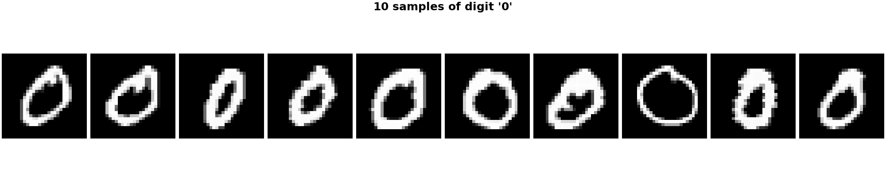
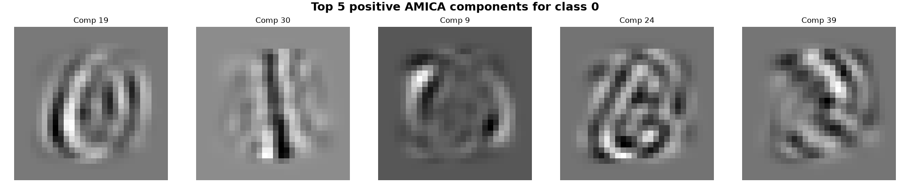
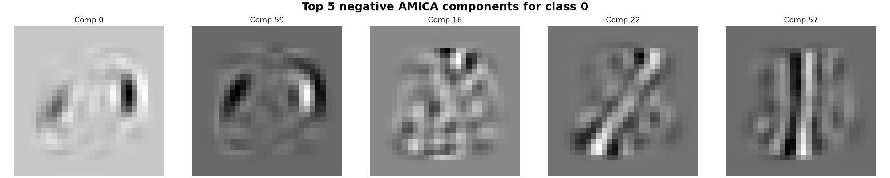

Note
Go to the end to download the full example code.
Use AMICA in a Scikit-Learn Pipeline¶
We’ll use AMICA as a preprocessing step in a scikit-learn pipeline to perform digit classification on the MNIST dataset.
import numpy as np
import matplotlib.pyplot as plt
from sklearn.datasets import fetch_openml
from sklearn.model_selection import train_test_split
from sklearn.preprocessing import StandardScaler
from sklearn.pipeline import Pipeline
from sklearn.linear_model import LogisticRegression
from sklearn.metrics import classification_report
from amica import AMICA
Load & split dataset
Download MNIST (70k samples, 28×28 flattened)
X, y = fetch_openml("mnist_784", version=1, return_X_y=True, as_frame=False)
# Just take digits 0-3 to speed up computation
mask = np.isin(y, ["0", "1", "2", "3"])
X = X[mask].copy()
y = y[mask].copy().astype(int)
# Train/test split: 60k / 10k
X_train, X_test, y_train, y_test = train_test_split(
X, y, test_size=1/7.0, shuffle=True, random_state=0
)
Build scikit-learn pipeline with AMICA¶
pipe = Pipeline([
("center", StandardScaler(with_std=False)), # remove global brightness bias
("amica", AMICA(n_components=60, max_iter=200, tol=.0001, random_state=0)),
("scale_components", StandardScaler()), # optional but helps LR
("logreg", LogisticRegression(
max_iter=2000,
n_jobs=-1
)),
])
Fit¶
INFO | getting the mean ... - amica.linalg:pre_whiten
INFO | Getting the covariance matrix ... - amica.linalg:pre_whiten
INFO | doing eigenvalue decomposition for 784 features ... - amica.linalg:pre_whiten
INFO | minimum eigenvalues: [-4.55850415e-11 -1.37865864e-11 -9.74983741e-12] - amica.linalg:pre_whiten
INFO | maximum eigenvalues: [596392.34842133 273364.62125472 259801.83424473] - amica.linalg:pre_whiten
INFO | num eigvals kept: 60 - amica.linalg:pre_whiten
INFO | Sphering the data... - amica.linalg:pre_whiten
INFO | numeigs = 60, nw = 60 - amica.linalg:pre_whiten
/home/circleci/project/amica-python/src/amica/linalg.py:342: RuntimeWarning: invalid value encountered in sqrt
Winv = (eigvecs * np.sqrt(eigvals)) @ eigvecs.T # Inverse of the whitening matrix
INFO | 1: block size = 24780 - amica.core:solve
INFO | Solving. (please be patient, this may take a while)... - amica.core:solve
INFO | Iteration 1, lrate = 0.05000, LL = -6.5241285, nd = 0.0414247, D = 0.01434 0.01434 took 0.60 seconds - amica.core:optimize
INFO | Iteration 2, lrate = 0.05000, LL = -6.4860297, nd = 0.0129868, D = 0.01272 0.01272 took 0.46 seconds - amica.core:optimize
INFO | Iteration 3, lrate = 0.05000, LL = -6.4806505, nd = 0.0091554, D = 0.01072 0.01072 took 0.55 seconds - amica.core:optimize
INFO | Iteration 4, lrate = 0.05000, LL = -6.4789618, nd = 0.0103978, D = 0.00932 0.00932 took 0.60 seconds - amica.core:optimize
INFO | Iteration 5, lrate = 0.05000, LL = -6.4779170, nd = 0.0111914, D = 0.00908 0.00908 took 0.60 seconds - amica.core:optimize
INFO | Iteration 6, lrate = 0.05000, LL = -6.4770838, nd = 0.0115805, D = 0.01013 0.01013 took 0.59 seconds - amica.core:optimize
INFO | Iteration 7, lrate = 0.05000, LL = -6.4763333, nd = 0.0117457, D = 0.01239 0.01239 took 0.47 seconds - amica.core:optimize
INFO | Iteration 8, lrate = 0.05000, LL = -6.4755880, nd = 0.0118217, D = 0.01570 0.01570 took 0.45 seconds - amica.core:optimize
INFO | Iteration 9, lrate = 0.05000, LL = -6.4748400, nd = 0.0117752, D = 0.01985 0.01985 took 0.39 seconds - amica.core:optimize
INFO | Iteration 10, lrate = 0.05000, LL = -6.4741013, nd = 0.0116966, D = 0.02458 0.02458 took 0.49 seconds - amica.core:optimize
INFO | Iteration 11, lrate = 0.05000, LL = -6.4733836, nd = 0.0117585, D = 0.02962 0.02962 took 0.32 seconds - amica.core:optimize
INFO | Iteration 12, lrate = 0.05000, LL = -6.4726820, nd = 0.0120070, D = 0.03477 0.03477 took 0.45 seconds - amica.core:optimize
INFO | Iteration 13, lrate = 0.05000, LL = -6.4719806, nd = 0.0123374, D = 0.04008 0.04008 took 0.43 seconds - amica.core:optimize
INFO | Iteration 14, lrate = 0.05000, LL = -6.4712658, nd = 0.0125475, D = 0.04568 0.04568 took 0.40 seconds - amica.core:optimize
INFO | Iteration 15, lrate = 0.05000, LL = -6.4705396, nd = 0.0127438, D = 0.05152 0.05152 took 0.40 seconds - amica.core:optimize
INFO | Iteration 16, lrate = 0.05000, LL = -6.4698040, nd = 0.0130921, D = 0.05748 0.05748 took 0.40 seconds - amica.core:optimize
INFO | Iteration 17, lrate = 0.05000, LL = -6.4690571, nd = 0.0135161, D = 0.06339 0.06339 took 0.42 seconds - amica.core:optimize
INFO | Iteration 18, lrate = 0.05000, LL = -6.4682980, nd = 0.0145332, D = 0.06941 0.06941 took 0.48 seconds - amica.core:optimize
INFO | Iteration 19, lrate = 0.05000, LL = -6.4677132, nd = 0.0383903, D = 0.07492 0.07492 took 0.41 seconds - amica.core:optimize
INFO | Iteration 20, lrate = 0.05000, LL = -6.4742918, nd = 0.0640181, D = 0.09013 0.09013 took 0.40 seconds - amica.core:optimize
WARNING | Likelihood decreasing! - amica.core:optimize
INFO | Iteration 21, lrate = 0.05000, LL = -6.4711017, nd = 0.0239338, D = 0.09038 0.09038 took 0.48 seconds - amica.core:optimize
INFO | Iteration 22, lrate = 0.05000, LL = -6.4692356, nd = 0.0235703, D = 0.09103 0.09103 took 0.32 seconds - amica.core:optimize
INFO | Iteration 23, lrate = 0.05000, LL = -6.4684240, nd = 0.0454887, D = 0.09214 0.09214 took 0.48 seconds - amica.core:optimize
INFO | Iteration 24, lrate = 0.05000, LL = -6.4688633, nd = 0.0296061, D = 0.10501 0.10501 took 0.31 seconds - amica.core:optimize
WARNING | Likelihood decreasing! - amica.core:optimize
INFO | Iteration 25, lrate = 0.05000, LL = -6.4662592, nd = 0.0360756, D = 0.10181 0.10181 took 0.49 seconds - amica.core:optimize
INFO | Iteration 26, lrate = 0.05000, LL = -6.4673037, nd = 0.0660219, D = 0.10302 0.10302 took 0.50 seconds - amica.core:optimize
WARNING | Likelihood decreasing! - amica.core:optimize
INFO | Iteration 27, lrate = 0.02500, LL = -6.4651729, nd = 0.0536160, D = 0.11169 0.11169 took 0.50 seconds - amica.core:optimize
INFO | Iteration 28, lrate = 0.02500, LL = -6.4655761, nd = 0.0727408, D = 0.10837 0.10837 took 0.50 seconds - amica.core:optimize
WARNING | Likelihood decreasing! - amica.core:optimize
INFO | Iteration 29, lrate = 0.02500, LL = -6.4661596, nd = 0.0630297, D = 0.12132 0.12132 took 0.42 seconds - amica.core:optimize
WARNING | Likelihood decreasing! - amica.core:optimize
INFO | Iteration 30, lrate = 0.02500, LL = -6.4640628, nd = 0.0555260, D = 0.11543 0.11543 took 0.50 seconds - amica.core:optimize
INFO | Iteration 31, lrate = 0.02500, LL = -6.4642734, nd = 0.0673343, D = 0.12612 0.12612 took 0.59 seconds - amica.core:optimize
WARNING | Likelihood decreasing! - amica.core:optimize
INFO | Iteration 32, lrate = 0.01250, LL = -6.4620097, nd = 0.0318262, D = 0.12294 0.12294 took 0.59 seconds - amica.core:optimize
INFO | Iteration 33, lrate = 0.01250, LL = -6.4613386, nd = 0.0490074, D = 0.12663 0.12663 took 0.50 seconds - amica.core:optimize
INFO | Iteration 34, lrate = 0.01250, LL = -6.4617114, nd = 0.0812279, D = 0.12682 0.12682 took 0.42 seconds - amica.core:optimize
WARNING | Likelihood decreasing! - amica.core:optimize
INFO | Iteration 35, lrate = 0.01250, LL = -6.4627048, nd = 0.0947661, D = 0.13380 0.13380 took 0.45 seconds - amica.core:optimize
WARNING | Likelihood decreasing! - amica.core:optimize
INFO | Iteration 36, lrate = 0.01250, LL = -6.4621204, nd = 0.0893919, D = 0.13122 0.13122 took 0.53 seconds - amica.core:optimize
INFO | Iteration 37, lrate = 0.01250, LL = -6.4617148, nd = 0.0852455, D = 0.13726 0.13726 took 0.50 seconds - amica.core:optimize
INFO | Iteration 38, lrate = 0.01250, LL = -6.4613657, nd = 0.0883785, D = 0.13555 0.13555 took 0.41 seconds - amica.core:optimize
INFO | Iteration 39, lrate = 0.01250, LL = -6.4614068, nd = 0.0918130, D = 0.14133 0.14133 took 0.40 seconds - amica.core:optimize
WARNING | Likelihood decreasing! - amica.core:optimize
INFO | Iteration 40, lrate = 0.00625, LL = -6.4592695, nd = 0.0254404, D = 0.14005 0.14005 took 0.49 seconds - amica.core:optimize
INFO | Iteration 41, lrate = 0.00625, LL = -6.4586384, nd = 0.0259649, D = 0.14130 0.14130 took 0.42 seconds - amica.core:optimize
INFO | Iteration 42, lrate = 0.00625, LL = -6.4582557, nd = 0.0339893, D = 0.14227 0.14227 took 0.45 seconds - amica.core:optimize
INFO | Iteration 43, lrate = 0.00625, LL = -6.4580633, nd = 0.0681805, D = 0.14390 0.14390 took 0.50 seconds - amica.core:optimize
INFO | Iteration 44, lrate = 0.00625, LL = -6.4590202, nd = 0.1428995, D = 0.14442 0.14442 took 0.50 seconds - amica.core:optimize
WARNING | Likelihood decreasing! - amica.core:optimize
INFO | Iteration 45, lrate = 0.00625, LL = -6.4615281, nd = 0.1652845, D = 0.14737 0.14737 took 0.40 seconds - amica.core:optimize
WARNING | Likelihood decreasing! - amica.core:optimize
INFO | Iteration 46, lrate = 0.00625, LL = -6.4598779, nd = 0.1130234, D = 0.14690 0.14690 took 0.50 seconds - amica.core:optimize
INFO | Iteration 47, lrate = 0.00625, LL = -6.4584646, nd = 0.0906659, D = 0.14853 0.14853 took 0.39 seconds - amica.core:optimize
INFO | Iteration 48, lrate = 0.00625, LL = -6.4584949, nd = 0.1237747, D = 0.14908 0.14908 took 0.40 seconds - amica.core:optimize
WARNING | Likelihood decreasing! - amica.core:optimize
INFO | Iteration 49, lrate = 0.00313, LL = -6.4571879, nd = 0.0539286, D = 0.14984 0.14984 took 0.41 seconds - amica.core:optimize
INFO | Iteration 50, lrate = 0.00313, LL = -6.4568014, nd = 0.0074543, D = 0.15043 0.15043 took 0.60 seconds - amica.core:optimize
INFO | Starting Newton ... setting numdecs to 0 - amica.core:optimize
INFO | Iteration 51, lrate = 0.00625, LL = -6.4566571, nd = 0.0074469, D = 0.15027 0.15027 took 0.69 seconds - amica.core:optimize
INFO | Iteration 52, lrate = 0.01250, LL = -6.4565292, nd = 0.0074375, D = 0.14994 0.14994 took 0.70 seconds - amica.core:optimize
INFO | Iteration 53, lrate = 0.02500, LL = -6.4563517, nd = 0.0074226, D = 0.14929 0.14929 took 0.51 seconds - amica.core:optimize
INFO | Iteration 54, lrate = 0.05000, LL = -6.4560498, nd = 0.0073964, D = 0.14805 0.14805 took 0.50 seconds - amica.core:optimize
INFO | Iteration 55, lrate = 0.10000, LL = -6.4555007, nd = 0.0073465, D = 0.14576 0.14576 took 0.60 seconds - amica.core:optimize
INFO | Iteration 56, lrate = 0.20000, LL = -6.4544890, nd = 0.0072562, D = 0.14189 0.14189 took 0.56 seconds - amica.core:optimize
INFO | Iteration 57, lrate = 0.30000, LL = -6.4530507, nd = 0.0071530, D = 0.13772 0.13772 took 0.64 seconds - amica.core:optimize
INFO | Iteration 58, lrate = 0.40000, LL = -6.4511726, nd = 0.0070597, D = 0.13478 0.13478 took 0.60 seconds - amica.core:optimize
INFO | Iteration 59, lrate = 0.50000, LL = -6.4488351, nd = 0.0069828, D = 0.13442 0.13442 took 0.60 seconds - amica.core:optimize
INFO | Iteration 60, lrate = 0.60000, LL = -6.4460090, nd = 0.0069268, D = 0.13753 0.13753 took 0.51 seconds - amica.core:optimize
INFO | Iteration 61, lrate = 0.70000, LL = -6.4426458, nd = 0.0068861, D = 0.14466 0.14466 took 0.65 seconds - amica.core:optimize
INFO | Iteration 62, lrate = 0.80000, LL = -6.4386986, nd = 0.0068342, D = 0.15625 0.15625 took 0.61 seconds - amica.core:optimize
INFO | Iteration 63, lrate = 0.90000, LL = -6.4341469, nd = 0.0067579, D = 0.17286 0.17286 took 0.51 seconds - amica.core:optimize
INFO | Iteration 64, lrate = 1.00000, LL = -6.4289956, nd = 0.0066319, D = 0.19524 0.19524 took 0.59 seconds - amica.core:optimize
INFO | Iteration 65, lrate = 1.00000, LL = -6.4237762, nd = 0.0064818, D = 0.22105 0.22105 took 0.61 seconds - amica.core:optimize
INFO | Iteration 66, lrate = 1.00000, LL = -6.4188764, nd = 0.0062979, D = 0.25115 0.25115 took 0.60 seconds - amica.core:optimize
INFO | Iteration 67, lrate = 1.00000, LL = -6.4148386, nd = 0.0061273, D = 0.28415 0.28415 took 0.58 seconds - amica.core:optimize
INFO | Iteration 68, lrate = 1.00000, LL = -6.4099851, nd = 0.0059560, D = 0.32095 0.32095 took 0.52 seconds - amica.core:optimize
INFO | Iteration 69, lrate = 1.00000, LL = -6.4055543, nd = 0.0057892, D = 0.35869 0.35869 took 0.68 seconds - amica.core:optimize
INFO | Iteration 70, lrate = 1.00000, LL = -6.4008394, nd = 0.0056362, D = 0.39956 0.39956 took 0.62 seconds - amica.core:optimize
INFO | Iteration 71, lrate = 1.00000, LL = -6.3964235, nd = 0.0055048, D = 0.44126 0.44126 took 0.65 seconds - amica.core:optimize
INFO | Iteration 72, lrate = 1.00000, LL = -6.3916876, nd = 0.0053855, D = 0.48527 0.48527 took 0.54 seconds - amica.core:optimize
INFO | Iteration 73, lrate = 1.00000, LL = -6.3877832, nd = 0.0052698, D = 0.53061 0.53061 took 0.65 seconds - amica.core:optimize
INFO | Iteration 74, lrate = 1.00000, LL = -6.3827964, nd = 0.0051533, D = 0.57617 0.57617 took 0.50 seconds - amica.core:optimize
INFO | Iteration 75, lrate = 1.00000, LL = -6.3793535, nd = 0.0050228, D = 0.62318 0.62318 took 0.54 seconds - amica.core:optimize
INFO | Iteration 76, lrate = 1.00000, LL = -6.3740680, nd = 0.0049442, D = 0.66957 0.66957 took 0.61 seconds - amica.core:optimize
INFO | Iteration 77, lrate = 1.00000, LL = -6.3718848, nd = 0.0049514, D = 0.71677 0.71677 took 0.58 seconds - amica.core:optimize
INFO | Iteration 78, lrate = 1.00000, LL = -6.3661916, nd = 0.0049458, D = 0.76152 0.76152 took 0.52 seconds - amica.core:optimize
INFO | Iteration 79, lrate = 1.00000, LL = -6.3652971, nd = 0.0049051, D = 0.80482 0.80482 took 0.60 seconds - amica.core:optimize
INFO | Iteration 80, lrate = 1.00000, LL = -6.3587815, nd = 0.0049037, D = 0.84306 0.84306 took 0.50 seconds - amica.core:optimize
INFO | Iteration 81, lrate = 1.00000, LL = -6.3583765, nd = 0.0050625, D = 0.88292 0.88292 took 0.61 seconds - amica.core:optimize
INFO | Iteration 82, lrate = 1.00000, LL = -6.3534613, nd = 0.0053062, D = 0.91431 0.91431 took 0.60 seconds - amica.core:optimize
INFO | Iteration 83, lrate = 1.00000, LL = -6.3541506, nd = 0.0055444, D = 0.94589 0.94589 took 0.56 seconds - amica.core:optimize
WARNING | Likelihood decreasing! - amica.core:optimize
INFO | Iteration 84, lrate = 0.60000, LL = -6.3470527, nd = 0.0043370, D = 0.95532 0.95532 took 0.65 seconds - amica.core:optimize
INFO | Iteration 85, lrate = 0.70000, LL = -6.3449041, nd = 0.0044560, D = 0.98304 0.98304 took 0.59 seconds - amica.core:optimize
INFO | Iteration 86, lrate = 0.80000, LL = -6.3433128, nd = 0.0046588, D = 1.00048 1.00048 took 0.50 seconds - amica.core:optimize
INFO | Iteration 87, lrate = 0.90000, LL = -6.3413361, nd = 0.0051717, D = 1.03277 1.03277 took 0.59 seconds - amica.core:optimize
INFO | Iteration 88, lrate = 1.00000, LL = -6.3414685, nd = 0.0057948, D = 1.05373 1.05373 took 0.52 seconds - amica.core:optimize
WARNING | Likelihood decreasing! - amica.core:optimize
INFO | Iteration 89, lrate = 0.60000, LL = -6.3349457, nd = 0.0042692, D = 1.06562 1.06562 took 0.69 seconds - amica.core:optimize
INFO | Iteration 90, lrate = 0.70000, LL = -6.3333552, nd = 0.0044604, D = 1.08707 1.08707 took 0.51 seconds - amica.core:optimize
INFO | Iteration 91, lrate = 0.80000, LL = -6.3344439, nd = 0.0050311, D = 1.10186 1.10186 took 0.60 seconds - amica.core:optimize
WARNING | Likelihood decreasing! - amica.core:optimize
INFO | Reducing maximum Newton lrate - amica.core:optimize
INFO | Iteration 92, lrate = 0.50000, LL = -6.3293576, nd = 0.0039211, D = 1.11603 1.11603 took 0.60 seconds - amica.core:optimize
INFO | Iteration 93, lrate = 0.50000, LL = -6.3276402, nd = 0.0036367, D = 1.12702 1.12702 took 0.60 seconds - amica.core:optimize
INFO | Iteration 94, lrate = 0.50000, LL = -6.3262817, nd = 0.0034826, D = 1.14123 1.14123 took 0.60 seconds - amica.core:optimize
INFO | Iteration 95, lrate = 0.50000, LL = -6.3252633, nd = 0.0034007, D = 1.15429 1.15429 took 0.63 seconds - amica.core:optimize
INFO | Iteration 96, lrate = 0.50000, LL = -6.3243600, nd = 0.0033167, D = 1.16657 1.16657 took 0.52 seconds - amica.core:optimize
INFO | Iteration 97, lrate = 0.50000, LL = -6.3234009, nd = 0.0032665, D = 1.18098 1.18098 took 0.56 seconds - amica.core:optimize
INFO | Iteration 98, lrate = 0.50000, LL = -6.3223390, nd = 0.0032024, D = 1.19227 1.19227 took 0.65 seconds - amica.core:optimize
INFO | Iteration 99, lrate = 0.50000, LL = -6.3214800, nd = 0.0031704, D = 1.20693 1.20693 took 0.69 seconds - amica.core:optimize
INFO | Iteration 100, lrate = 0.50000, LL = -6.3204286, nd = 0.0031225, D = 1.21781 1.21781 took 0.59 seconds - amica.core:optimize
INFO | Iteration 101, lrate = 0.50000, LL = -6.3200714, nd = 0.0031199, D = 1.21781 1.21781 took 0.62 seconds - amica.core:optimize
INFO | Iteration 102, lrate = 0.50000, LL = -6.3198401, nd = 0.0031108, D = 1.21781 1.21781 took 0.69 seconds - amica.core:optimize
INFO | Iteration 103, lrate = 0.50000, LL = -6.3196668, nd = 0.0031022, D = 1.21781 1.21781 took 0.62 seconds - amica.core:optimize
INFO | Iteration 104, lrate = 0.50000, LL = -6.3195323, nd = 0.0030951, D = 1.21781 1.21781 took 0.58 seconds - amica.core:optimize
INFO | Iteration 105, lrate = 0.50000, LL = -6.3194219, nd = 0.0030901, D = 1.21781 1.21781 took 0.59 seconds - amica.core:optimize
INFO | Iteration 106, lrate = 0.50000, LL = -6.3193247, nd = 0.0030856, D = 1.21781 1.21781 took 0.60 seconds - amica.core:optimize
INFO | Iteration 107, lrate = 0.50000, LL = -6.3184984, nd = 0.0030029, D = 1.23504 1.23504 took 0.61 seconds - amica.core:optimize
INFO | Iteration 108, lrate = 0.50000, LL = -6.3177617, nd = 0.0029677, D = 1.24615 1.24615 took 0.59 seconds - amica.core:optimize
INFO | Iteration 109, lrate = 0.50000, LL = -6.3170697, nd = 0.0029511, D = 1.26143 1.26143 took 0.60 seconds - amica.core:optimize
INFO | Iteration 110, lrate = 0.50000, LL = -6.3162026, nd = 0.0029240, D = 1.27180 1.27180 took 0.61 seconds - amica.core:optimize
INFO | Iteration 111, lrate = 0.50000, LL = -6.3155468, nd = 0.0029151, D = 1.28697 1.28697 took 0.56 seconds - amica.core:optimize
INFO | Iteration 112, lrate = 0.50000, LL = -6.3146339, nd = 0.0028953, D = 1.29727 1.29727 took 0.55 seconds - amica.core:optimize
INFO | Iteration 113, lrate = 0.50000, LL = -6.3140045, nd = 0.0028895, D = 1.31266 1.31266 took 0.60 seconds - amica.core:optimize
INFO | Iteration 114, lrate = 0.50000, LL = -6.3131260, nd = 0.0028747, D = 1.32325 1.32325 took 0.59 seconds - amica.core:optimize
INFO | Iteration 115, lrate = 0.50000, LL = -6.3125300, nd = 0.0028702, D = 1.33912 1.33912 took 0.50 seconds - amica.core:optimize
INFO | Iteration 116, lrate = 0.50000, LL = -6.3116042, nd = 0.0028516, D = 1.35005 1.35005 took 0.59 seconds - amica.core:optimize
INFO | Iteration 117, lrate = 0.50000, LL = -6.3110124, nd = 0.0028390, D = 1.36641 1.36641 took 0.60 seconds - amica.core:optimize
INFO | Iteration 118, lrate = 0.50000, LL = -6.3101667, nd = 0.0028213, D = 1.37776 1.37776 took 0.61 seconds - amica.core:optimize
INFO | Iteration 119, lrate = 0.50000, LL = -6.3095588, nd = 0.0028088, D = 1.39455 1.39455 took 0.56 seconds - amica.core:optimize
INFO | Iteration 120, lrate = 0.50000, LL = -6.3087626, nd = 0.0027881, D = 1.40611 1.40611 took 0.60 seconds - amica.core:optimize
INFO | Iteration 121, lrate = 0.50000, LL = -6.3081526, nd = 0.0027711, D = 1.42323 1.42323 took 0.63 seconds - amica.core:optimize
INFO | Iteration 122, lrate = 0.50000, LL = -6.3073520, nd = 0.0027489, D = 1.43489 1.43489 took 0.68 seconds - amica.core:optimize
INFO | Iteration 123, lrate = 0.50000, LL = -6.3067577, nd = 0.0027303, D = 1.45222 1.45222 took 0.64 seconds - amica.core:optimize
INFO | Iteration 124, lrate = 0.50000, LL = -6.3059195, nd = 0.0027004, D = 1.46382 1.46382 took 0.59 seconds - amica.core:optimize
INFO | Iteration 125, lrate = 0.50000, LL = -6.3053680, nd = 0.0026748, D = 1.48100 1.48100 took 0.52 seconds - amica.core:optimize
INFO | Iteration 126, lrate = 0.50000, LL = -6.3046011, nd = 0.0026389, D = 1.49232 1.49232 took 0.69 seconds - amica.core:optimize
INFO | Iteration 127, lrate = 0.50000, LL = -6.3040339, nd = 0.0026104, D = 1.50914 1.50914 took 0.59 seconds - amica.core:optimize
INFO | Iteration 128, lrate = 0.50000, LL = -6.3033294, nd = 0.0025757, D = 1.51982 1.51982 took 0.61 seconds - amica.core:optimize
INFO | Iteration 129, lrate = 0.50000, LL = -6.3027452, nd = 0.0025441, D = 1.53591 1.53591 took 0.66 seconds - amica.core:optimize
INFO | Iteration 130, lrate = 0.50000, LL = -6.3021160, nd = 0.0025057, D = 1.54559 1.54559 took 0.64 seconds - amica.core:optimize
INFO | Iteration 131, lrate = 0.50000, LL = -6.3015755, nd = 0.0024745, D = 1.56075 1.56075 took 0.59 seconds - amica.core:optimize
INFO | Iteration 132, lrate = 0.50000, LL = -6.3009445, nd = 0.0024301, D = 1.56932 1.56932 took 0.51 seconds - amica.core:optimize
INFO | Iteration 133, lrate = 0.50000, LL = -6.3003861, nd = 0.0023944, D = 1.58351 1.58351 took 0.50 seconds - amica.core:optimize
INFO | Iteration 134, lrate = 0.50000, LL = -6.2998689, nd = 0.0023590, D = 1.59103 1.59103 took 0.50 seconds - amica.core:optimize
INFO | Iteration 135, lrate = 0.50000, LL = -6.2993495, nd = 0.0023391, D = 1.60423 1.60423 took 0.65 seconds - amica.core:optimize
INFO | Iteration 136, lrate = 0.50000, LL = -6.2988433, nd = 0.0023094, D = 1.61062 1.61062 took 0.54 seconds - amica.core:optimize
INFO | Iteration 137, lrate = 0.50000, LL = -6.2983592, nd = 0.0022983, D = 1.62297 1.62297 took 0.51 seconds - amica.core:optimize
INFO | Iteration 138, lrate = 0.50000, LL = -6.2978623, nd = 0.0022757, D = 1.62837 1.62837 took 0.58 seconds - amica.core:optimize
INFO | Iteration 139, lrate = 0.50000, LL = -6.2973586, nd = 0.0022664, D = 1.63990 1.63990 took 0.51 seconds - amica.core:optimize
INFO | Iteration 140, lrate = 0.50000, LL = -6.2969249, nd = 0.0022436, D = 1.64453 1.64453 took 0.59 seconds - amica.core:optimize
INFO | Iteration 141, lrate = 0.50000, LL = -6.2964648, nd = 0.0022367, D = 1.65541 1.65541 took 0.51 seconds - amica.core:optimize
INFO | Iteration 142, lrate = 0.50000, LL = -6.2960255, nd = 0.0022197, D = 1.65928 1.65928 took 0.61 seconds - amica.core:optimize
INFO | Iteration 143, lrate = 0.50000, LL = -6.2955658, nd = 0.0022229, D = 1.66970 1.66970 took 0.60 seconds - amica.core:optimize
INFO | Iteration 144, lrate = 0.50000, LL = -6.2951526, nd = 0.0021987, D = 1.67305 1.67305 took 0.60 seconds - amica.core:optimize
INFO | Iteration 145, lrate = 0.50000, LL = -6.2947252, nd = 0.0022057, D = 1.68309 1.68309 took 0.59 seconds - amica.core:optimize
INFO | Iteration 146, lrate = 0.50000, LL = -6.2942953, nd = 0.0021978, D = 1.68589 1.68589 took 0.51 seconds - amica.core:optimize
INFO | Iteration 147, lrate = 0.50000, LL = -6.2939107, nd = 0.0022165, D = 1.69566 1.69566 took 0.65 seconds - amica.core:optimize
INFO | Iteration 148, lrate = 0.50000, LL = -6.2935164, nd = 0.0022173, D = 1.69804 1.69804 took 0.55 seconds - amica.core:optimize
INFO | Iteration 149, lrate = 0.50000, LL = -6.2931297, nd = 0.0022603, D = 1.70768 1.70768 took 0.68 seconds - amica.core:optimize
INFO | Iteration 150, lrate = 0.50000, LL = -6.2927576, nd = 0.0022682, D = 1.70966 1.70966 took 0.51 seconds - amica.core:optimize
INFO | Iteration 151, lrate = 0.50000, LL = -6.2923868, nd = 0.0023334, D = 1.71927 1.71927 took 0.50 seconds - amica.core:optimize
INFO | Iteration 152, lrate = 0.50000, LL = -6.2920335, nd = 0.0023282, D = 1.72105 1.72105 took 0.51 seconds - amica.core:optimize
INFO | Iteration 153, lrate = 0.50000, LL = -6.2916603, nd = 0.0023850, D = 1.73060 1.73060 took 0.69 seconds - amica.core:optimize
INFO | Iteration 154, lrate = 0.50000, LL = -6.2913132, nd = 0.0023652, D = 1.73216 1.73216 took 0.59 seconds - amica.core:optimize
INFO | Iteration 155, lrate = 0.50000, LL = -6.2909097, nd = 0.0024046, D = 1.74164 1.74164 took 0.51 seconds - amica.core:optimize
INFO | Iteration 156, lrate = 0.50000, LL = -6.2906000, nd = 0.0023750, D = 1.74311 1.74311 took 0.69 seconds - amica.core:optimize
INFO | Iteration 157, lrate = 0.50000, LL = -6.2902049, nd = 0.0024023, D = 1.75235 1.75235 took 0.59 seconds - amica.core:optimize
INFO | Iteration 158, lrate = 0.50000, LL = -6.2898913, nd = 0.0023670, D = 1.75374 1.75374 took 0.61 seconds - amica.core:optimize
INFO | Iteration 159, lrate = 0.50000, LL = -6.2895148, nd = 0.0024131, D = 1.76270 1.76270 took 0.59 seconds - amica.core:optimize
INFO | Iteration 160, lrate = 0.50000, LL = -6.2892199, nd = 0.0023816, D = 1.76397 1.76397 took 0.52 seconds - amica.core:optimize
INFO | Iteration 161, lrate = 0.50000, LL = -6.2888532, nd = 0.0024311, D = 1.77250 1.77250 took 0.59 seconds - amica.core:optimize
INFO | Iteration 162, lrate = 0.50000, LL = -6.2885787, nd = 0.0024135, D = 1.77390 1.77390 took 0.69 seconds - amica.core:optimize
INFO | Iteration 163, lrate = 0.50000, LL = -6.2882053, nd = 0.0024414, D = 1.78201 1.78201 took 0.60 seconds - amica.core:optimize
INFO | Iteration 164, lrate = 0.50000, LL = -6.2879661, nd = 0.0024445, D = 1.78378 1.78378 took 0.57 seconds - amica.core:optimize
INFO | Iteration 165, lrate = 0.50000, LL = -6.2876161, nd = 0.0025073, D = 1.79132 1.79132 took 0.60 seconds - amica.core:optimize
INFO | Iteration 166, lrate = 0.50000, LL = -6.2874167, nd = 0.0025112, D = 1.79338 1.79338 took 0.53 seconds - amica.core:optimize
INFO | Iteration 167, lrate = 0.50000, LL = -6.2870385, nd = 0.0025613, D = 1.80036 1.80036 took 0.60 seconds - amica.core:optimize
INFO | Iteration 168, lrate = 0.50000, LL = -6.2868683, nd = 0.0025538, D = 1.80271 1.80271 took 0.53 seconds - amica.core:optimize
INFO | Iteration 169, lrate = 0.50000, LL = -6.2865057, nd = 0.0025969, D = 1.80928 1.80928 took 0.55 seconds - amica.core:optimize
INFO | Iteration 170, lrate = 0.50000, LL = -6.2863148, nd = 0.0025748, D = 1.81170 1.81170 took 0.59 seconds - amica.core:optimize
INFO | Iteration 171, lrate = 0.50000, LL = -6.2859587, nd = 0.0025893, D = 1.81804 1.81804 took 0.69 seconds - amica.core:optimize
INFO | Iteration 172, lrate = 0.50000, LL = -6.2857791, nd = 0.0025854, D = 1.82041 1.82041 took 0.60 seconds - amica.core:optimize
INFO | Iteration 173, lrate = 0.50000, LL = -6.2854483, nd = 0.0026123, D = 1.82668 1.82668 took 0.59 seconds - amica.core:optimize
INFO | Iteration 174, lrate = 0.50000, LL = -6.2852311, nd = 0.0025809, D = 1.82890 1.82890 took 0.52 seconds - amica.core:optimize
INFO | Iteration 175, lrate = 0.50000, LL = -6.2849309, nd = 0.0026053, D = 1.83509 1.83509 took 0.58 seconds - amica.core:optimize
INFO | Iteration 176, lrate = 0.50000, LL = -6.2847216, nd = 0.0025921, D = 1.83723 1.83723 took 0.60 seconds - amica.core:optimize
INFO | Iteration 177, lrate = 0.50000, LL = -6.2844446, nd = 0.0026212, D = 1.84333 1.84333 took 0.52 seconds - amica.core:optimize
INFO | Iteration 178, lrate = 0.50000, LL = -6.2842255, nd = 0.0026034, D = 1.84538 1.84538 took 0.55 seconds - amica.core:optimize
INFO | Iteration 179, lrate = 0.50000, LL = -6.2839657, nd = 0.0026160, D = 1.85148 1.85148 took 0.60 seconds - amica.core:optimize
INFO | Iteration 180, lrate = 0.50000, LL = -6.2837309, nd = 0.0026068, D = 1.85335 1.85335 took 0.69 seconds - amica.core:optimize
INFO | Iteration 181, lrate = 0.50000, LL = -6.2835195, nd = 0.0026329, D = 1.85950 1.85950 took 0.60 seconds - amica.core:optimize
INFO | Iteration 182, lrate = 0.50000, LL = -6.2832582, nd = 0.0026135, D = 1.86134 1.86134 took 0.60 seconds - amica.core:optimize
INFO | Iteration 183, lrate = 0.50000, LL = -6.2830749, nd = 0.0026291, D = 1.86749 1.86749 took 0.57 seconds - amica.core:optimize
INFO | Iteration 184, lrate = 0.50000, LL = -6.2827957, nd = 0.0026150, D = 1.86924 1.86924 took 0.55 seconds - amica.core:optimize
INFO | Iteration 185, lrate = 0.50000, LL = -6.2826659, nd = 0.0026488, D = 1.87540 1.87540 took 0.66 seconds - amica.core:optimize
INFO | Iteration 186, lrate = 0.50000, LL = -6.2823413, nd = 0.0026179, D = 1.87703 1.87703 took 0.60 seconds - amica.core:optimize
INFO | Iteration 187, lrate = 0.50000, LL = -6.2822533, nd = 0.0026436, D = 1.88323 1.88323 took 0.60 seconds - amica.core:optimize
INFO | Iteration 188, lrate = 0.50000, LL = -6.2818938, nd = 0.0026211, D = 1.88476 1.88476 took 0.55 seconds - amica.core:optimize
INFO | Iteration 189, lrate = 0.50000, LL = -6.2818598, nd = 0.0026358, D = 1.89094 1.89094 took 0.59 seconds - amica.core:optimize
INFO | Iteration 190, lrate = 0.50000, LL = -6.2814499, nd = 0.0026131, D = 1.89237 1.89237 took 0.66 seconds - amica.core:optimize
INFO | Iteration 191, lrate = 0.50000, LL = -6.2814842, nd = 0.0026304, D = 1.89859 1.89859 took 0.63 seconds - amica.core:optimize
WARNING | Likelihood decreasing! - amica.core:optimize
INFO | Iteration 192, lrate = 0.35000, LL = -6.2798328, nd = 0.0017604, D = 1.89928 1.89928 took 0.60 seconds - amica.core:optimize
INFO | Iteration 193, lrate = 0.45000, LL = -6.2798218, nd = 0.0017673, D = 1.90527 1.90527 took 0.60 seconds - amica.core:optimize
INFO | Iteration 194, lrate = 0.50000, LL = -6.2797208, nd = 0.0019615, D = 1.90634 1.90634 took 0.57 seconds - amica.core:optimize
INFO | Iteration 195, lrate = 0.50000, LL = -6.2798595, nd = 0.0021781, D = 1.91239 1.91239 took 0.63 seconds - amica.core:optimize
WARNING | Likelihood decreasing! - amica.core:optimize
INFO | Iteration 196, lrate = 0.35000, LL = -6.2787006, nd = 0.0016010, D = 1.91325 1.91325 took 0.60 seconds - amica.core:optimize
INFO | Iteration 197, lrate = 0.45000, LL = -6.2786590, nd = 0.0016530, D = 1.91845 1.91845 took 0.60 seconds - amica.core:optimize
INFO | Iteration 198, lrate = 0.50000, LL = -6.2786575, nd = 0.0018454, D = 1.91983 1.91983 took 0.57 seconds - amica.core:optimize
INFO | Iteration 199, lrate = 0.50000, LL = -6.2787780, nd = 0.0020774, D = 1.92504 1.92504 took 0.60 seconds - amica.core:optimize
WARNING | Likelihood decreasing! - amica.core:optimize
INFO | Reducing maximum Newton lrate - amica.core:optimize
INFO | Iteration 200, lrate = 0.25000, LL = -6.2774719, nd = 0.0011519, D = 1.92565 1.92565 took 0.53 seconds - amica.core:optimize
WARNING | Maximum number of iterations reached before convergence. Consider increasing max_iter or relaxing tol. - amica.core:optimize
INFO | Finished in 111.80 seconds - amica.core:optimize
/home/circleci/project/amica-python/.venv/lib/python3.11/site-packages/sklearn/linear_model/_logistic.py:1184: FutureWarning: 'n_jobs' has no effect since 1.8 and will be removed in 1.10. You provided 'n_jobs=-1', please leave it unspecified.
warnings.warn(msg, category=FutureWarning)
Evaluate¶
y_pred = pipe.predict(X_test)
print(classification_report(
y_test, y_pred, target_names=[str(i) for i in range(4)]
))
print(f"Accuracy: {pipe.score(X_test, y_test):.4f}")
precision recall f1-score support
0 0.98 0.99 0.98 951
1 0.98 0.99 0.98 1135
2 0.96 0.94 0.95 988
3 0.97 0.96 0.97 1057
accuracy 0.97 4131
macro avg 0.97 0.97 0.97 4131
weighted avg 0.97 0.97 0.97 4131
Accuracy: 0.9717
Important features for the 0 digit¶
We can select the most important ICA features for the 0 class (with negative and positive weights) and display their associate ICA sources.
Helper¶
def imshow_row(images, titles=None, figsize=(20, 4), suptitle=None, cmap="gray"):
fig, axes = plt.subplots(1, len(images), figsize=figsize, constrained_layout=True)
if suptitle:
fig.suptitle(suptitle, fontsize=18, fontweight="bold")
for i, ax in enumerate(axes):
ax.imshow(images[i].reshape(28, 28), cmap=cmap)
ax.axis("off")
if titles is not None:
ax.set_title(titles[i])
return fig
Show sample digits of class 0¶

Top positive / negative logistic weights¶
logreg = pipe.named_steps["logreg"]
amica = pipe.named_steps["amica"]
coef = logreg.coef_[0]
sorted_idx = np.argsort(coef)
top_pos = sorted_idx[-5:][::-1]
top_neg = sorted_idx[:5]
imshow_row(
amica.components_[top_pos],
titles=[f"Comp {i}" for i in top_pos],
suptitle="Top 5 positive AMICA components for class 0"
)
plt.show()

imshow_row(
amica.components_[top_neg],
titles=[f"Comp {i}" for i in top_neg],
suptitle="Top 5 negative AMICA components for class 0"
)
plt.show()

Total running time of the script: (2 minutes 8.114 seconds)